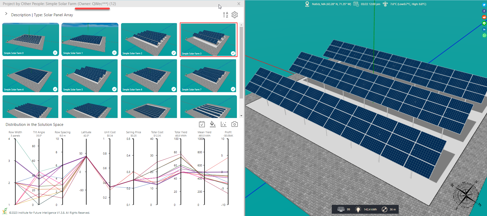
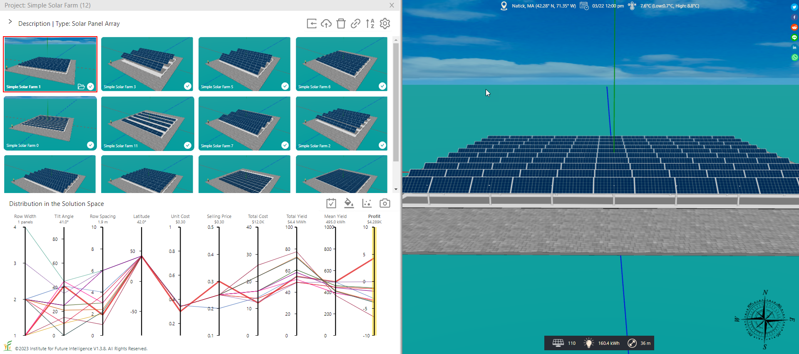
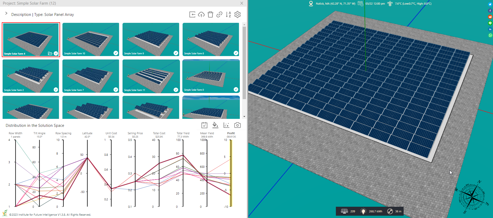
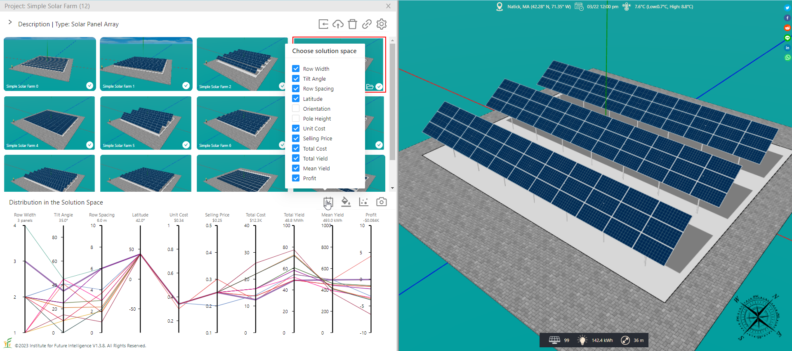
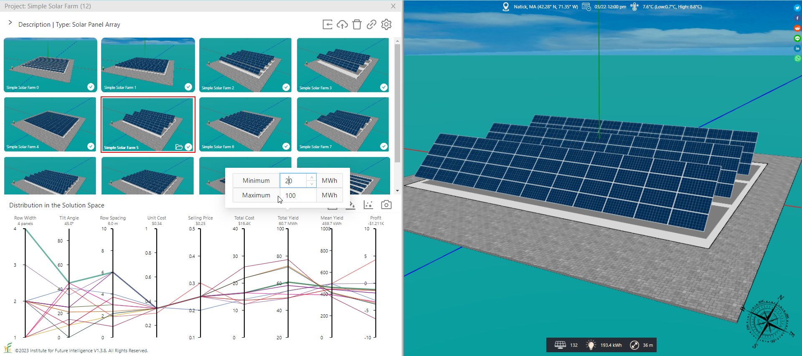
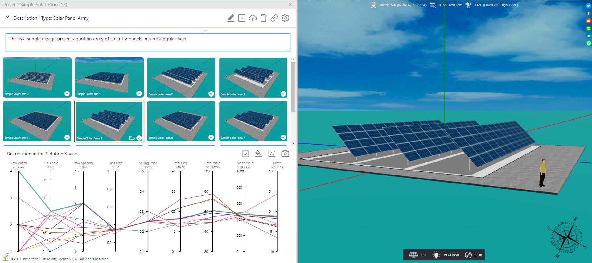
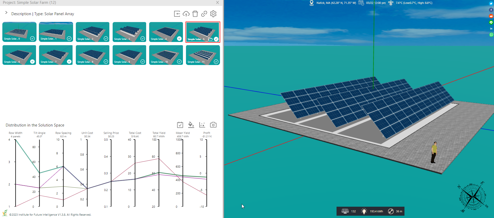
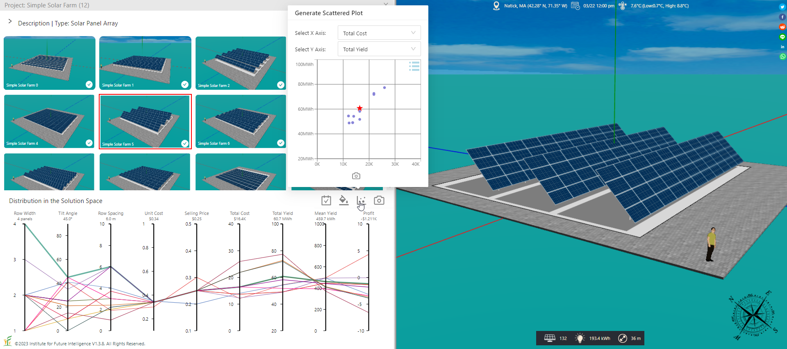
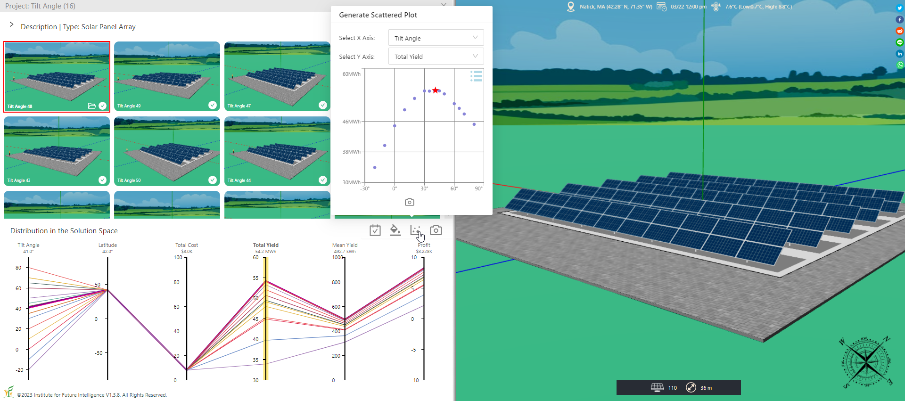
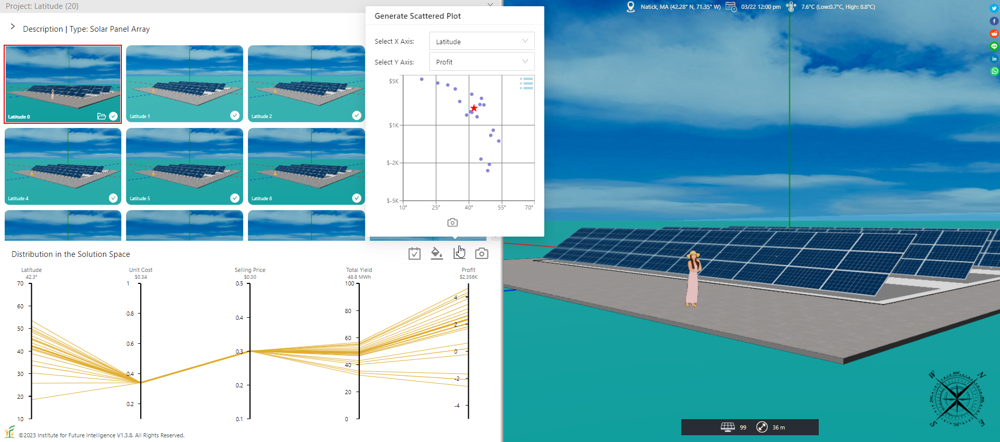

Visual Analysis of Many Designs in the Solution Space
How Aladdin supports optioneering by letting designers generate, visualize, link, brush, and compare many designs in a high-dimensional solution space.
From a mathematical point of view, a well-defined design problem is about choosing parameters. All the independent parameters available for adjustment constitute the basis for the solution space, with each parameter mapping to a dimension of that hyperspace. The ranges in which the parameters are allowed to change determine the volume of the feasible region of the solution space within which the designer conducts the search. This conceptualization of design leads to parametricism that advocates replacing manual tweaking procedures with computational procedures for automatically generating a variety of designs to speed up the search. Once such computational procedures are created, designers can execute them on computers to produce new solutions by tuning the parameters — without having to repeat the entire manual procedures.
With the ability to generate many designs such that the solution space can be surveyed more thoroughly, the designer faces a different kind of challenge (sort of like moving from a situation of "idea drought" to a situation of "idea flood"): How can one analyze, compare, and sift those design options and alternatives so that one can pick and choose without being overwhelmed by the sheer number of possibilities? In the field of engineering, the methodology to deal with this kind of complex problems is often referred to as optioneering. In this article, I will show you how Aladdin handles this challenge with the design of a simple solar farm as an example. Note that you must sign in with Aladdin in order to use all the functionalities introduced in this article as many of them depend on cloud storage to function.
Creating, opening, and copying a project
In Aladdin, you can use "Main Menu > Project > Create New Project..." to create a project as a placeholder for collecting a set of designs. This action splits the Aladdin window in the browser into two parts: The left part shows a gallery of curated designs and a visualization of their distribution in the solution space using a parallel coordinates plot (which is typically used to display high-dimensional datasets), whereas the right part shows the conventional 3D view of a design solution (it can be the selected design in the gallery or a design that is not yet part of the collection but is under consideration to be included). You can double-click any image in the gallery to load the corresponding 3D model into the right part.
To open an existing project, use "Main Menu > Project > Open Project..." and then select it from the list displayed in the panel that appears. To make a copy of a project, use "Main Menu > Project > Save Project As..." and then provide a different name for the copy.
Adding a design to a project
Once you have created a project, you can add the design currently displayed in the 3D view to the project by using the Import Button on the tool bar above the gallery. Although you can add any design to a project, only a design that has the same type with the project type (which is "Solar Panel Array" in the case discussed in this article) can be meaningfully aggregated and analyzed. To remove a design from the project, select it first and then click the Delete Button on the tool bar above the gallery.
Note that you will not be able to add a design to the project or remove a design from it if you are not the owner of the project. The buttons will be invisible to non-owners, as illustrated below (but you should be able to use other tools such as sorting the designs that do not require ownership).

Updating an existing design in a project
If you have used a parametric design tool or a generative design tool supported by the project to change an existing design, you can update it using the Upload Button on the tool bar above the gallery to overwrite the document on the cloud.
Linking and brushing
The next step after you have collected a number of designs in a project is to analyze them to glean an insight. Linking and brushing refer to techniques for enhancing interactive visual data analysis. A complex data set often needs to be visualized with multiple graphic representations or views. Linking allows these views to be connected in such a way that they are all changed at the same time when the user interacts with only one of the views. For example, the user can move the mouse over any image in the gallery to show the corresponding lines in the parallel coordinates plot and move the mouse over the lines in the parallel coordaintes plot to see the corresponding image in the gallery (i.e., the gallery and the plot are linked). Brushing allows the user to select a subset of the data. For example, the user can select or deselect an image to add or remove the corresponding design from the parallel coordinates plot. In this way, some designs can be temporarily brushed aside so that the user can see the remaining ones more clearly. The following video demonstrates these features.
The link above provides an online example for you to see on your own how this user interface works.
Sorting the designs of a project by a selected property
You can click the axis or the axis label of the parallel coordinates plot to sort the designs of a project. A selected property will be highlighted in the plot. The Sort Button on the tool bar above the gallery allows you to reverse the sorting order.


Configuring a project
When you create a new project, it will show the full solution space by default. If you do not need all the dimensions, you can select only the dimensions that you want to display in the parallel coordinates plot using the pop-up menu, as shown below.

You can also set the range (i.e., the minimum and maximum values) of an axis in the parallel coordinates plot using the pop-up menu that opens when you move the mouse over the axis label.

Editing the description of a project
When you create a new project, you can add a description about it as a memo for yourself and others. By default, the description is folded under the tool bar above the gallery to save space. If you need to revise the description as you make progress on the project, you can first expand the description area and then double-click on it to enter the editing mode or press the Editor Button on the tool bar, as shown below. Then you can edit the text freely.

Excluding a design from the solution space visualization
Sometimes you may want to hide some designs from the solution space visualization. To show or hide a design, just select or deselect the check box at the lower-right corner of the corresponding thumbnail image.

Using a scattered plot to examine correlation between two properties
A two-dimensional scattered plot can be generated to show the correlation between two selected properties among the included designs. This representation may be easier to understand, though it is applicable to only two dimensions of the solution space.

Sharing a project
Once you have collected a set of designs for your project, you can share it with others by generating a link to it using the Link Button on the tool bar above the gallery. Anyone clicking the link will be able to view the project in a Web browser.
Applications
Suppose you are interested in studying the relationship between the output of a solar panel array and its tilt angle, you can create a series of designs that differ only in the tilt angle. Then you can create a scattered plot that shows the total yield against the tilt angle, which clearly visualizes how the output varies with the angle as depicted in the following image.

Using the same method, you can also invesigate the relationship between the output and the latitude. As you can see from the following image, the same design of a solar panel array can have very different profitabilities in different locations.

Conclusion
This article introduces the management of a project, defined in Aladdin as an effort to generate a variety of designs from which one or more optimal solutions are identified through visually analyzing and comparing them in the solution space (i.e., optioneering). This work lays a software foundation for generative design that harnesses artificial intelligence to create many competitive solutions, which can then be handled using an optioneering approach enabled by this project management tool.
Currently, a project can only be controlled by a single owner. We plan to allow a team of designers to contribute to a project in the future. This capability will support collaborative design.
← Back to Aladdin